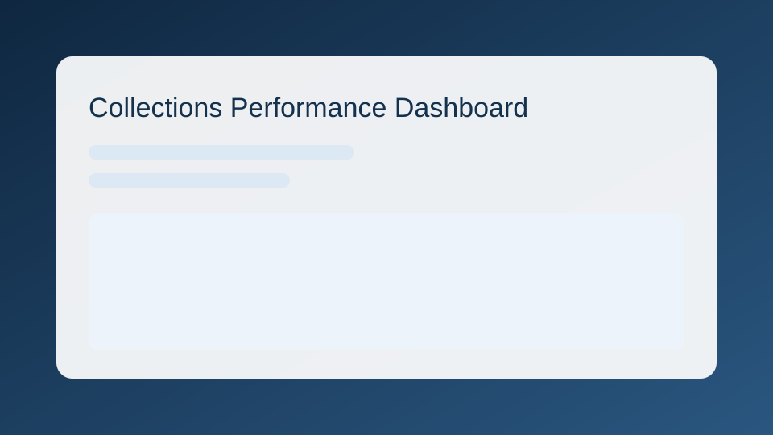
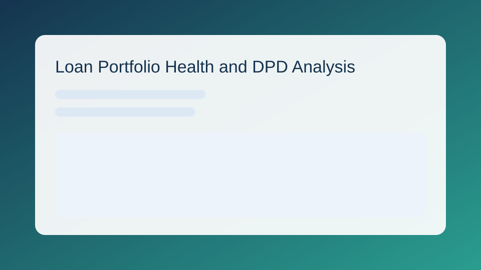
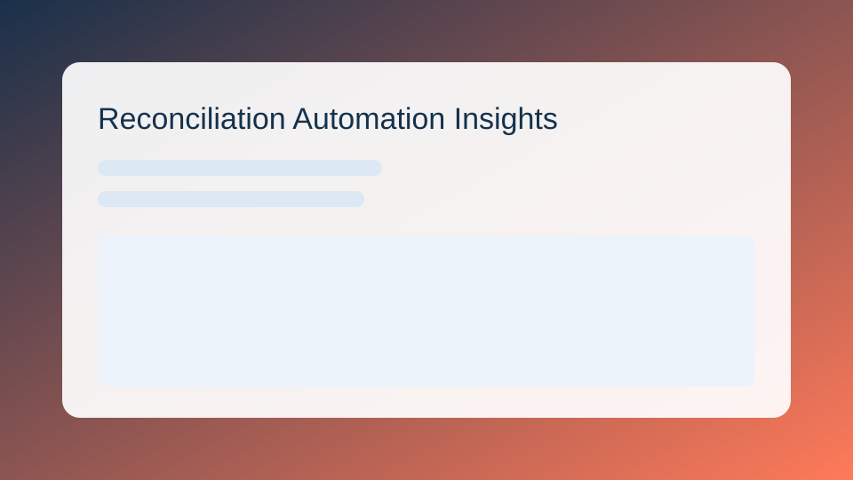
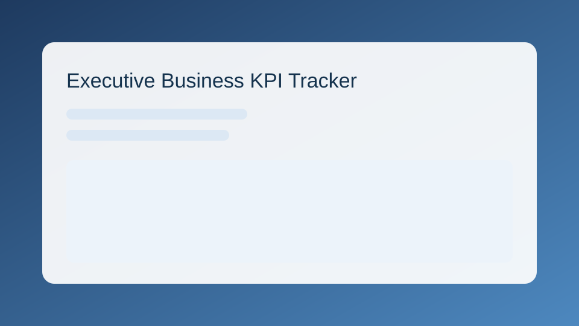

Python + SQL
Data cleaning, transformation, analysis, and business logic extraction.
Turning raw data into decisions through clear dashboards and business-focused analytics. I build practical BI products that make finance and operations teams faster, sharper, and more confident.
Data cleaning, transformation, analysis, and business logic extraction.
Decision-focused dashboards with high signal and low clutter.
Metric frameworks aligned with executive and operations outcomes.
Mismatch tracing, workflow visibility, and faster financial closure.
Monitored recovery trends and risk signals to improve action turnaround.
Live DashboardProject Repository

Tracked bucket movement and high-risk cohorts before they escalated.
Live DashboardProject Repository

Reduced manual checks with exception-first monitoring across workflows.
Live DashboardProject Repository

Unified weekly and monthly leadership reporting into one source of truth.
Live DashboardProject Repository

Chartered Accountant with analytics-led delivery across finance and operations use cases, including reconciliation intelligence and management reporting.
Chartered Accountant (CA), The Institute of Chartered Accountants of India.